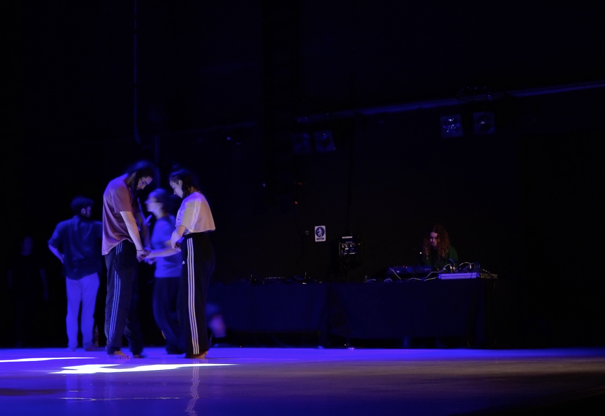
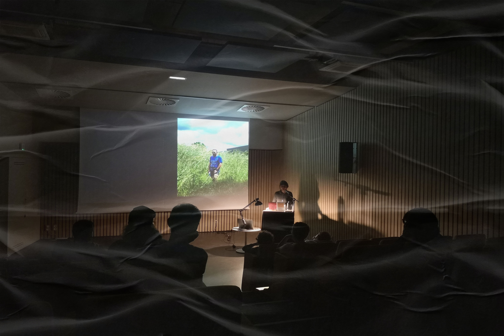
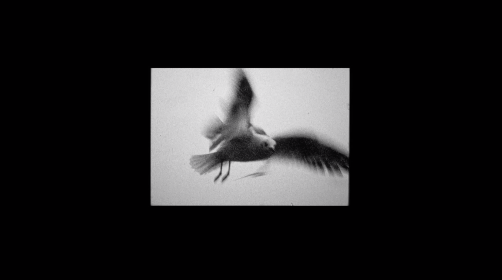
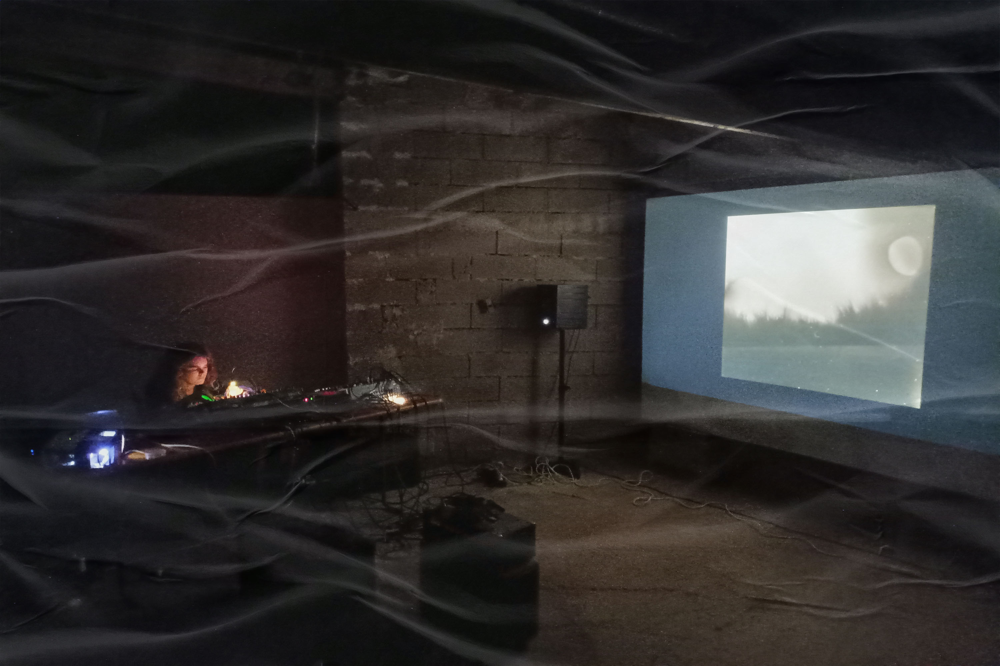
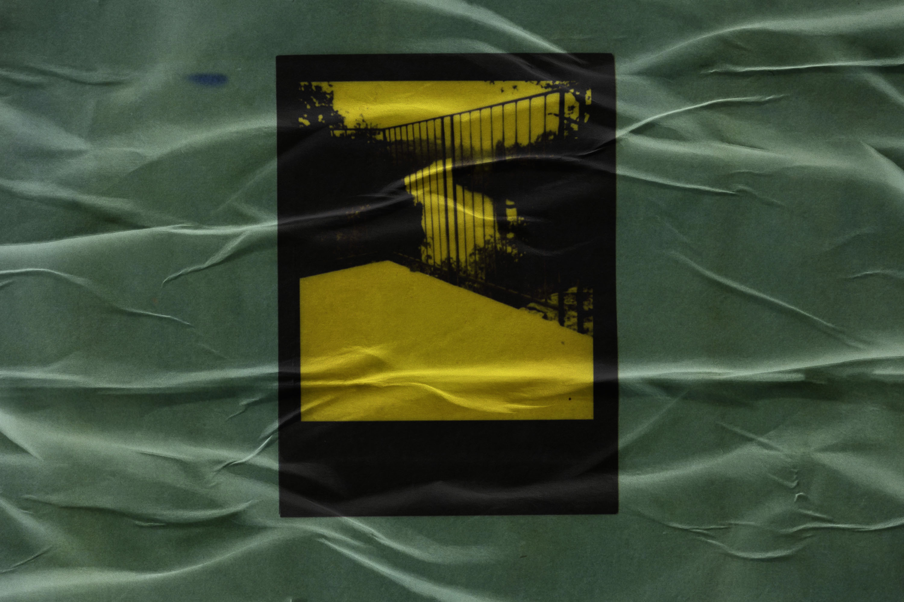
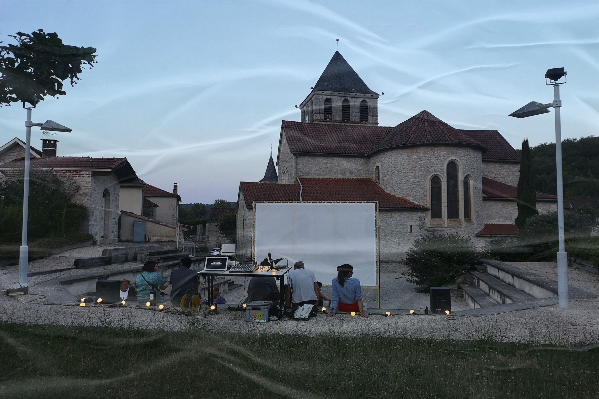

Premiere coming in 2025. An independent documentary featuring interviews with some interesting people, including Slavoj Zizek and Temple Grandin, among others. The film is based around the idea posed by philosopher Walter Benjamin that capitalism is a train that eventually ends in a head-on crash
Director Seungjae Oh
Design animations, title and endtitle sequence by Aaron Björk
Sound by Kasper Kaae, Petra
Sound design by Nat Bradley
Ending title song by Sukkube
NANAJAM and Sukkube, Live on modular at Le Phare, 1'19:00, 2025

Full video soon here
Croisement, restitution of resicendy with Pauline Dupin, 2024

Producer Pauline Dupin
Co-producer : Mediatheque d'estretefond, Aurore Degoit, Dorris France-Oillan Menyé et Cathy Tran Tu San
Edited by Pauline Dupin and Maxime Duhamed
Photography by Pauline Dupin
Sound design : Charlène Levasseur
Photography film, restitution of workshop with Michael Ackerman, 2024

An independent photography film featuring interviews images taken in a intensive workshop during summer 2024, including images from the participants
Director by Julia Castel and Michael Ackerman
Edited by Julia Castel and Patricia Morosan
Sound design by Charlène Levasseur
Animal Ataraxia, photography film with Julia Castel, 2024

An independent photography film. The photography film is based around a dream
Producer Julia Castel
Edited by Julia Castel
Photography by Julia Castel
Sound design by Charlène Levasseur
Photography film, restitution of workshop with Patricia Morosan, 2024


An independent photography film featuring interviews images taken in a intensive workshop during summer 2024, including images from Anna Sweden, Marie Julliard, Vincent Boissonnat, Catherine, Virginie Gueguen.
Director by Julia Castel and Patricia Morosan
Edited by Julia Castel and Patricia Morosan
Mixed by Charlène Levasseur and Marie Deback Rodez
Sound design by Charlène Levasseur
Lost Sonar Collective, documentary film live act, 2023
Born out of one of the darkest moments the global techno scene has faced in it's history, the lost sonar collective offers a much needed platform for live techno artists of Berlin and its surroundings to express their intricate artistry. Using various lost places and lost dance floors to capture high quality immersive live performances set against striking brutalist scenery. Lostsonar Collective, 35:00 x 5min
Lostsonar Collective Production
Producers : Hara Koukouvinou, Bernhard Range
Post-production : Hartbrand
Direction : Bernhard Range
Manager : Hara
Filmed by Bernhard Range, Kimbow, Charlene Levasseur
Set Photographer : Kenneth Scott
Video recording of Peryl, Johannes K, Drusnoise, Jacqnoise, Aleassandra Nero
Mastering : Bernhard Range
Unikradioshow, Live on modular at Campus FM, 47:07, 2023
Music : Sukkube
Radioshow : Deuce
Video production : El Pintor
Berliner Funkwerke Vol. 1, Live on modular, video stream, 2:14:00, 2023
Music : Sukkube
Video production and recording : Lostnfound Berlin
Berlin Modular Society BMS24, Video live on modular at Acud Macht Neue, 1:08:40, 2022
Music: Sukkube
Video production and recording : Berlin modular society
Les Ephemeres and Sukkube, Common Multiverse Initiative on currents.fm, Live on modular at SLF studio, 59:56, 2021
Les Ephemeres and Sukkube are invited by the BLVSH collective for the Common Multiverse Initiative Festival streamed March 2021 on currents.fm. They performed a hypnotic techno jam on modulars, drum machines, and noise making devices
Music : Les Ephemeres and Sukkube
Video production and recording : Stephan Lefrançois
Extended Modular Jam, Video stream, 56:20, 2021
Les Ephemeres are joined by Sukkube for a slow, hypnotic techno jam on modulars, drum machines and noise making devices
Music : Les Ephemeres and Sukkube live
Video production and recording : Stephane LeFrançois
I Know You Wanna Bitch, video clip 3:36, 2021
Here my interpretation of the single of Wei.xzy. "I know the feeling when things ain't going the way I thought they would. I call these times a stupid bitch. These two magic words set the rhythm. There are four versions of a stupid bitch for y'all: trip original, accelerated in the interpretation of Roma Zuckerman, hypnotizing, as if it would be under thickened water, Bonus. Minimalistic by Beennooutside
Music : Wei.xzy
Video production: Charlene Levasseur
Actress : Aya Ando and Kitty4000
Label : Collective Russia
Mastered : Artyom Tuwalski
Artwor : Eleonore Verger
Associated Paraboloid, Raven, Spatiosselet, Sukkube, animation for livestream, 2021
Music : Raven, Spatiosselet, Sukkube live
Video production : Charlene Levasseur
Label : Associated Paraboloid
Summer's Cell, video clip 5:59, 2020
This "Summer's Cell" video clip was made for the artist Halosaur to mark the release of his album "Lonely Shapes" on Rythm and Cult. Filming took place in the Oberschoneweide forest, Berlin, Germany
Video production : Charlene Levasseur
Actress : Julia Castel
Music : Halosaur
Label : Rhythm Cult
Unicream (3D Portfolio), video clip, 5:18, 2020
Extract video clip from video game created with Unity. Take a walk in 3D world, it's an archive of paintings and designs of the artist
Music : Sukkube
Video production : Charlene Levasseur
Don’t Walk Alone, video clip 4:00, 2019
This music video, built in collaboration with the music producer Pablo Mateo. He was inspired by the film Annihilation by Alex Garland. Charlene integrated images that she tooks in Berlin's street. She comes to transform this reel images in a fantastic way with the help of her digital skills, this video grouping their common ideas
Video production: Charlene Levasseur
Music : Pablo Mateo
Label : Figure
C2 Pablo Mateo Don't Walk Alone, loop video 0:17, 2019
This video clip was produced in collaboration with artist Pablo Mateo. Inspired by Alex Garland's film Annihilation, Charlène incorporated shots of Berlin, which she transformed into a reel of fantastic images
Video production : Charlene Levasseur
Music : Pablo Mateo
Label : Figure
A1 Pablo Mateo Just News, loop video 0:20, 2019
Video production : Charlene Levasseur
Music : Pablo Mateo
Label : Figure
A2 Pablo Mateo Blew It feat. Emika, loop video 0:19, 2019
Video production : Charlene Levasseur
Music : Pablo Mateo
Label : Figure
B1 Pablo Mateo Transformation, loop video 0:12, 2019
Video production : Charlene Levasseur
Music : Pablo Mateo
Label : Figure
B2 Pablo Mateo How To Crush A Super Nova, loop video 0:20, 2019
Video production : Charlene Levasseur
Music : Pablo Mateo
Label : Figure
C1 Pablo Mateo Weird Reflections Beyond The Sky, loop video 0:19, 2019
Video production : Charlene Levasseur
Music : Pablo Mateo
Label : Figure
D2 Pablo Mateo Sexual For Canibals, loop video 0:20, 2019
Video production : Charlene Levasseur
Music : Pablo Mateo
Label : Figure
D1 Pablo Mateo XXCheater, loop video 0:19, 2019
Video production : Charlene Levasseur
Music : Pablo Mateo
Label : Figure
CRIM UND TRAUM, video clip, 2:10, 2019
This an analog and digital work. It contains cyanotypes, photographs and videos. All the works has been distorted by video effect. It is like an experimental fiction or like a night vision
Sound Design : Charlene Levasseur
Photographs/cyanotypes : Julia Castel
Video production : Charlene Levasseur
Sojbdor x Dj Yves - Monogamy, video clip, 6:24, 2018
Music : Sukkube
Degraded : Ilyess El Habchi
Video production : Yves Bartlett
Label : Acolora
ACOLORA_défi_science fiction, video clip 0:36, 2019
Animation for a challange of Acolora, a collective and label of art and music
Music : Charlene Levasseur
Video production : Charlene Levasseur
Label : Acolora
La Maison Hantée, video clip 0:25, 2019
Music : Charlene Levasseur feat. Nadia Mazzega
Video production : Charlene Levasseur
Album : Motherlode
Artwork : by Lucas Hadjam
Label : Acolora
New York, video clip 3:00, 2019
Video produced for the exhibition Hier und jetzt, an exhibition at Kit:Exhibition curated by Léa Lascaud
Video production : Charlene Levasseur
Music : Without music